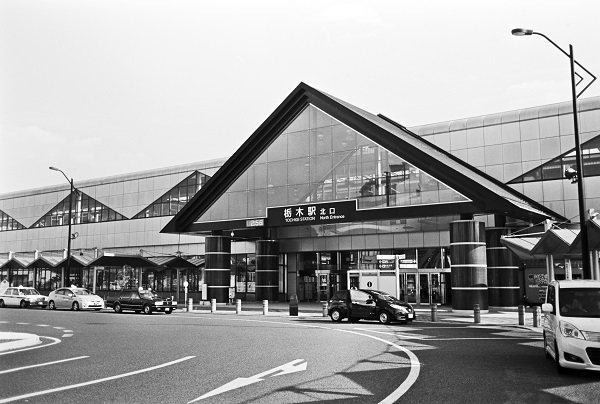

19 両毛線 TN11_東武日光線
19 栃木駅 Tochigi
大平下駅
←← 両毛線 →→
思川駅
新太平下駅
←← 東武日光線 →→
新栃木駅

2018/3/4 ﾐﾉﾙﾀCLE 35mm ｱｸﾛｽ
2018/3/4 ﾐﾉﾙﾀCLE 35mm ｱｸﾛｽ
2018/3/4 ﾐﾉﾙﾀCLE 35mm ｱｸﾛｽ
2018/3/4 ﾐﾉﾙﾀCLE 35mm ｱｸﾛｽ
2018/3/4 ﾐﾉﾙﾀCLE 35mm ｱｸﾛｽ
戻る
ﾎｰﾑ